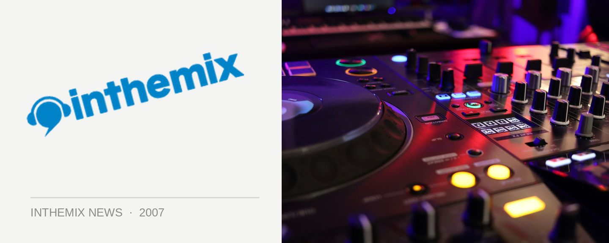

Lookin’ Good gets into the Mardigras spirit
In keeping with the festivities going on everywhere else in the city, gay icon Alex Taylor to hit the decks at Lookin’ Good this Saturday night at Kings Cross favourite Candy’s Apartment. Heaps of big ‘pink’ anthems are promised!
Keeping with the Mardigras theme, also featured on the night will be Mike Kelly who has just returned from Germany after a year away making big waves in the gay scene.
Things kick off this Saturday night from 10pm, check below for set times…
Main Room
10.00 – 11.30 Scott Pullen
11.30 – 01.00 Mike Kelly
01.00 – 02.30 Alex Taylor
02.30 – 04.00 Adam Coverdale
04.00 – 04.30 Adam Coverdale b2b Tom da Silva
04.30 – 06.00 Tom da Silva
Bulletproof Room
11.00 – 01.00 Sam Serene
01.00 – 03.00 Coops
03.00 – 05.00 Ben Kelly